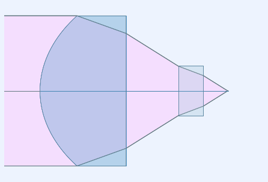
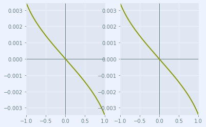

Python: ray-optics
Python: ray-optics¶
The python package ray-optics is used to read some CodeV .seq files and ZEMAX .zmx files and do some analyses. Please install the most recent version of ray-optics, with “conda install -c conda-forge rayoptics==0.8.1” if 0.8.1 is the actual version.
%matplotlib inline
# initialization
from rayoptics.environment import *
---------------------------------------------------------------------------
ImportError Traceback (most recent call last)
~\AppData\Local\Temp\ipykernel_20612\479588544.py in <module>
1 get_ipython().run_line_magic('matplotlib', 'inline')
2 # initialization
----> 3 from rayoptics.environment import *
4
~\Anaconda3\envs\mypython37\lib\site-packages\rayoptics\environment.py in <module>
26
27 from rayoptics.gui.appmanager import AppManager, ModelInfo
---> 28 from rayoptics.gui.appcmds import (create_new_model, open_model,
29 set_apertures, set_vignetting)
30
~\Anaconda3\envs\mypython37\lib\site-packages\rayoptics\gui\appcmds.py in <module>
16 from opticalglass import glassfactory as gfact
17
---> 18 from rayoptics.codev import cmdproc
19 from rayoptics.zemax import zmxread
20
~\Anaconda3\envs\mypython37\lib\site-packages\rayoptics\codev\cmdproc.py in <module>
14 from . import reader as cvr
15
---> 16 import rayoptics.optical.opticalmodel as opticalmodel
17 from rayoptics.elem.surface import (DecenterData, Circular, Rectangular,
18 Elliptical)
~\Anaconda3\envs\mypython37\lib\site-packages\rayoptics\optical\opticalmodel.py in <module>
14 import rayoptics
15
---> 16 import rayoptics.elem.elements as ele
17 import rayoptics.optical.model_constants as mc
18
~\Anaconda3\envs\mypython37\lib\site-packages\rayoptics\elem\elements.py in <module>
14
15 from abc import abstractmethod
---> 16 from typing import Protocol, ClassVar, List, Dict, Any
17
18 import numpy as np
ImportError: cannot import name 'Protocol' from 'typing' (C:\Users\herbst\Anaconda3\envs\mypython37\lib\typing.py)
root_pth = Path(rayoptics.__file__).resolve().parent
opm, info = open_model(root_pth/"zemax/tests/354710-C-Zemax(ZMX).zmx", info=True)
info
({'VERS': '140124 258 36214',
'pupil': ('aperture', 'object', 'pupil'),
'FTYP': '0 0 1 1 0 0 0',
'STANDARD': 5,
'EVENASPH': 1,
'CONI': 1,
'conj type': 'infinite',
'# surfs': 6,
'# wvls': 1,
'fov': ('field', 'object', 'angle'),
'# fields': 1,
'GCAT': ['LIGHTPATH', 'SCHOTT'],
'glass substituted': 2,
'encoding': 'utf-16'},
{'D-ZK3M': ('D-ZK3', 'CDGM'), 'BK7': ('BK7', 'Robb1983.SCHOTT')})
opm
<rayoptics.optical.opticalmodel.OpticalModel at 0x19f78826cd0>
sm = opm['seq_model']
osp = opm['optical_spec']
pm = opm['parax_model']
em = opm['ele_model']
pt = opm['part_tree']
ar = opm['analysis_results']
sm.list_model()
c t medium mode zdr sd
Obj: 0.000000 1.00000e+10 air 1 0.0000
Stop: 1.182174 0.862527 D-ZK3 1 0.75000
2: 0.000000 0.523243 air 1 0.57417
3: 0.000000 0.250000 BK7 1 0.24917
4: 0.000000 0.249999 air 1 0.15527
Img: 0.000000 0.00000 1 8.9134e-06
pm.first_order_data()
efl 1.483
ffl -1.483
pp1 1.647e-16
bfl 0.2446
ppk 1.239
f/# 0.9889
m -1.483e-10
red -6.742e+09
obj_dist 1e+10
obj_ang 1
enp_dist -0
enp_radius 0.75
na obj 7.5e-11
n obj 1
img_dist 0.2446
img_ht 0.02589
exp_dist -1.244
exp_radius 0.75
na img -0.4512
n img 1
optical invariant 0.01309
layout_plt = plt.figure(FigureClass=InteractiveLayout, opt_model=opm,
do_draw_rays=True, do_paraxial_layout=False).plot()

abr_plt = plt.figure(FigureClass=RayFanFigure, opt_model=opm, data_type='Ray',
scale_type=Fit.All_Same).plot()

One can see that not any glass is recognized:
filename = r'C:\Work\OpTaliX\Test\AFL12-15.zmx'
opm, info = open_model(filename, info=True)
info
({'pupil': ('aperture', 'object', 'pupil'),
'FTYP': '0 0',
'STANDARD': 3,
'EVENASPH': 1,
'CONI': 1,
'conj type': 'finite',
'# surfs': 4,
'# wvls': 1,
'fov': ('field', 'object', 'angle'),
'# fields': 1,
'GCAT': ['SPECIAL'],
'glass not found': 1,
'encoding': 'utf-8'},
{'C79-80': 1})